Classical Encryption
Bagian dengan bobot nilai terbesar di UTS. Penjelasan dibuat sederhana, lengkap dengan gambar dari slide dosen, contoh hitung, dan cara hafal.
A. Model enkripsi simetris
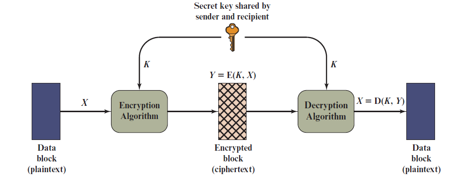
Bayangkan kotak berkunci. Pengirim memasukkan pesan, mengunci dengan kunci, lalu penerima membuka dengan kunci yang sama. Slide menyebut 5 komponennya:
| Komponen | Artinya |
|---|---|
| Plaintext | pesan asli yang bisa dibaca |
| Encryption algorithm | aturan mengacak pesan (substitusi dan transformasi) |
| Secret key | kunci rahasia. Kunci yang berbeda menghasilkan ciphertext yang berbeda |
| Ciphertext | pesan acak hasil enkripsi. Bergantung pada plaintext dan kunci |
| Decryption algorithm | algoritma enkripsi yang dijalankan terbalik: ciphertext + kunci → plaintext |
Y = E(K, X) dan X = D(K, Y).B. Dasar yang wajib hafal
Substitusi vs transposisi
| Substitusi | Transposisi | |
|---|---|---|
| Yang dilakukan | huruf diganti huruf lain | huruf dipindah posisi, hurufnya tetap |
| Ciri ciphertext | huruf berbeda dari plaintext | huruf sama persis dengan plaintext, hanya urutannya acak |
| Contoh | Caesar, Monoalphabetic, Playfair, Hill, Vigenère | Rail Fence, Transposisi Kolom |
Huruf jadi angka
Semua rumus memakai angka, jadi hafalkan tabel ini (slide memakai a = 0 sampai z = 25).
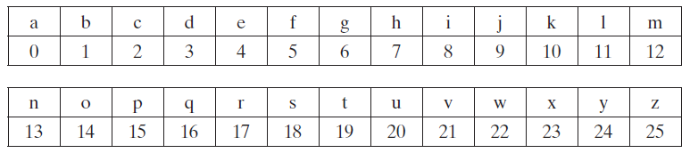
| A | B | C | D | E | F | G | H | I | J | K | L | M |
|---|---|---|---|---|---|---|---|---|---|---|---|---|
| 0 | 1 | 2 | 3 | 4 | 5 | 6 | 7 | 8 | 9 | 10 | 11 | 12 |
| N | O | P | Q | R | S | T | U | V | W | X | Y | Z |
| 13 | 14 | 15 | 16 | 17 | 18 | 19 | 20 | 21 | 22 | 23 | 24 | 25 |
Apa itu mod 26?
Seperti jam dinding: setelah angka 12 kembali ke 1. Bedanya, alfabet punya 26 huruf, jadi setelah Z (25) kembali ke A (0). Mod 26 artinya ambil sisa bagi 26.
47 mod 26 = 21 (47 − 26 = 21).
Negatif: −3 mod 26 = 23 (tambah 26 sampai positif).
C. Caesar Cipher
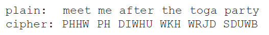
Cipher paling sederhana: setiap huruf digeser k langkah di alfabet. Key-nya cuma satu angka, yaitu k. Bayangkan memutar cincin kode: huruf bagian dalam digeser sejauh k dari huruf bagian luar.
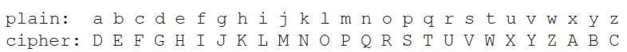
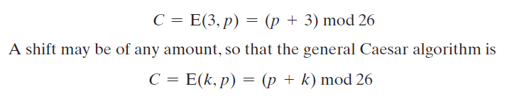
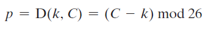
Dekripsi: p = (C − k) mod 26
Enkripsi: plaintext → ciphertext
2. Tambah 3: 10, 7, 14, 14, 17.
3. Angka jadi huruf: K, H, O, O, R.
Spasi dibiarkan. Hasil: KHOOR ZRUOG.
Cek huruf slide: m = 12 → (12 + 3) mod 26 = 15 = P. Itu sebabnya "meet" menjadi "PHHW".
Dekripsi: ciphertext → plaintext
Hasil: THIS IS A TEST.
Kalau negatif, tambah 26. Contoh A: 0 − 3 = −3 → 23 = X.
Kalau key tidak diketahui: brute force
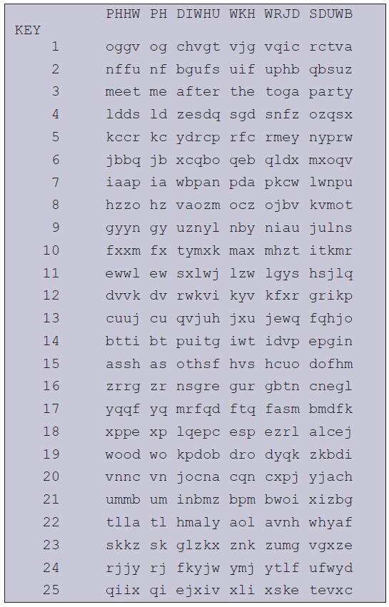
Hanya ada 25 kemungkinan key, jadi cukup coba semuanya. Di slide, hanya key 3 yang menghasilkan kalimat bermakna: meet me after the toga party.
Latihan hitung (tambahan, tidak dari slide)
1) Enkripsi MEET ME AT NOON dengan k = 5.
Lihat jawaban
Tiap huruf + 5. Contoh M(12) + 5 = 17 = R, E(4) + 5 = 9 = J. Hasil: RJJY RJ FY STTS.2) Dekripsi YMJ HFJXFW HNUMJW dengan k = 5.
Lihat jawaban
Tiap huruf − 5. Contoh Y(24) − 5 = 19 = T, M(12) − 5 = 7 = H. Hasil: THE CAESAR CIPHER.3) XPPE LE YZZY adalah Caesar tetapi k tidak diketahui. Cari plaintext-nya.
Lihat jawaban
Coba mundur k = 1, 2, 3, … sampai terbaca. Pada k = 11 hasilnya MEET AT NOON (X(23) − 11 = 12 = M). Petunjuk cepat: pola "XPPE" punya huruf kembar di tengah, cocok untuk kata seperti MEET.D. Monoalphabetic Substitution
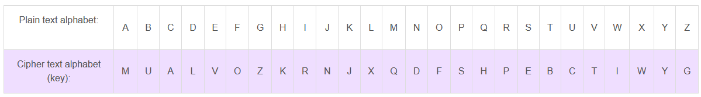
Tiap huruf diganti dengan satu huruf pasangan tetap menurut tabel. Barisan huruf cipher boleh permutasi apa saja dari 26 huruf. Banyak kemungkinan key = 26! > 4 × 10²⁶, jadi brute force mustahil.
Enkripsi
attack at dawn: a→M, t→B, t→B, a→M, c→A, k→J … hasil MBBMAJ MB LMID.Dekripsi
QVVB QV: cari tiap huruf di baris cipher, ambil huruf atasnya: Q→m, V→e, V→e, B→t … hasil meet me.Memecahkan tanpa key: analisis frekuensi
Pola huruf asli terbawa ke ciphertext: huruf yang paling sering di bahasa Inggris tetap paling sering, hanya wujudnya berganti. Inilah kelemahannya.
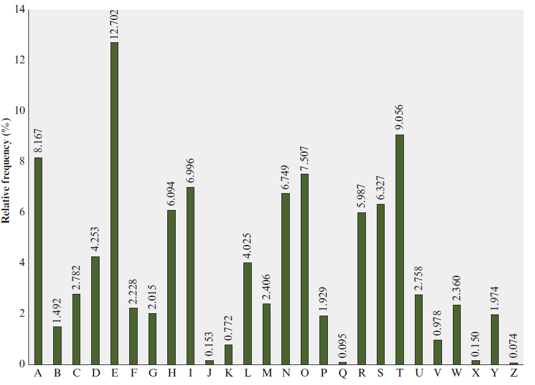
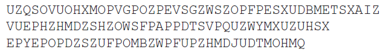
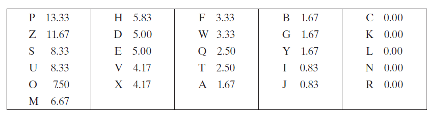
- Hitung frekuensi tiap huruf ciphertext. Di slide: P dan Z paling sering, jadi kemungkinan P = e dan Z = t (belum pasti yang mana).
- Huruf frekuensi tinggi lainnya (S, U, O, M, H) kemungkinan dari {a, h, i, n, o, r, s}. Huruf paling jarang (A, B, G, Y, I, J) kemungkinan dari {b, j, k, q, v, x, z}.
- Cari digram (pasangan 2 huruf) yang sering. Digram paling umum adalah
th. Di ciphertext,ZWmuncul 3 kali, jadi Z = t, W = h. - Cari trigram (3 huruf). Urutan
ZWPberarti "the", trigram paling sering di bahasa Inggris, jadi tebakan benar. - Isi huruf yang sudah pasti, tebak sisanya dari kata yang mulai terbaca, ulangi sampai kalimat utuh.
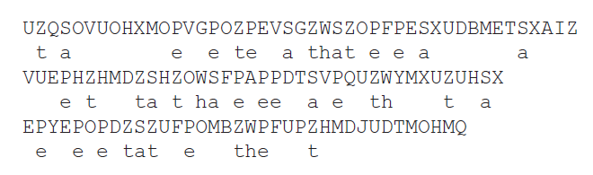
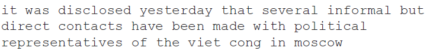
Latihan hitung (tambahan, tidak dari slide)
1) Dengan key slide di atas, enkripsi meet me after the toga party.
Lihat jawaban
m→Q, e→V, e→V, t→B, … Hasil: QVVB QV MOBVP BKV BFZM SMPBY.2) Berapa banyak key monoalphabetic? Kenapa Caesar jauh lebih mudah dipecahkan?
Lihat jawaban
26! ≈ 4 × 10²⁶ key, tidak mungkin dicoba satu per satu. Caesar hanya punya 25 key, jadi brute force cukup.E. Playfair Cipher
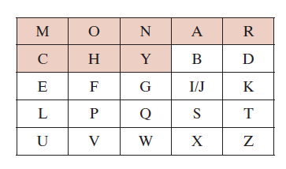
Enkripsi 2 huruf sekaligus (sepasang) memakai papan huruf 5×5. Karena yang diacak adalah pasangan, pola huruf tunggal lebih tersamarkan daripada monoalphabetic.
Langkah 1: buat matriks dari key
Isi huruf key (tanpa huruf kembar) dari kiri ke kanan, atas ke bawah. Lalu isi sisa alfabet berurutan. I dan J dihitung satu huruf (satu kotak).
| M | O | N | A | R |
| C | H | Y | B | D |
| E | F | G | I/J | K |
| L | P | Q | S | T |
| U | V | W | X | Z |
Langkah 2: pecah plaintext jadi pasangan
Dua huruf sama dalam satu pasangan dipisah dengan huruf pengisi (biasanya X). Slide: balloon menjadi BA LX LO ON. Kalau huruf terakhir sendirian, tambahkan X.
Langkah 3: tiga aturan
| Posisi pasangan | Enkripsi | Dekripsi | Contoh slide |
|---|---|---|---|
| Satu baris | ambil huruf di kanan (ujung kanan kembali ke kiri) | ambil huruf di kiri | ar → RM |
| Satu kolom | ambil huruf di bawah (paling bawah kembali ke atas) | ambil huruf di atas | mu → CM |
| Persegi panjang (beda baris dan kolom) | tiap huruf ambil huruf di barisnya sendiri pada kolom pasangannya | sama persis dengan enkripsi | hs → BP, ea → IM (atau JM) |
Enkripsi: plaintext → ciphertext
BA LX LO ON (LL dan OO dipisah dengan X). Proses tiap pasangan di tabel bawah.Supaya tidak keliru, ikuti urutan ini untuk tiap pasangan: (1) tulis posisi (baris, kolom) kedua huruf, (2) tentukan: baris sama? kolom sama? atau persegi, (3) terapkan aturan.
| Pasangan | Posisi (baris, kolom) | Aturan | Hasil |
|---|---|---|---|
| BA | B(2,4) A(1,4) | satu kolom → bawah | B→I, A→B ⇒ IB |
| LX | L(4,1) X(5,4) | persegi | L→S (baris 4, kolom 4), X→U (baris 5, kolom 1) ⇒ SU |
| LO | L(4,1) O(1,2) | persegi | L→P (baris 4, kolom 2), O→M (baris 1, kolom 1) ⇒ PM |
| ON | O(1,2) N(1,3) | satu baris → kanan | O→N, N→A ⇒ NA |
Hasil: IB SU PM NA = IBSUPMNA.
Dekripsi: ciphertext → plaintext
IB SU PM NA. Pakai matriks yang sama, tetapi baris ke kiri, kolom ke atas, persegi tetap tukar sudut.IB: satu kolom → atas: I→B, B→A = BA.
SU: persegi → LX. PM: persegi → LO. NA: satu baris → kiri: N→O, A→N = ON.
Hasil: BALXLOON. Buang X sisipan: BALLOON.
Latihan hitung (tambahan, tidak dari slide)
1) Enkripsi CAT dengan key MONARCHY.
Lihat jawaban
Pasangan:CA TX (T sendirian, tambah X). CA: C(2,1) A(1,4) → persegi → C ambil baris 2 kolom 4 = B, A ambil baris 1 kolom 1 = M ⇒ BM. TX: T(4,5) X(5,4) → persegi → T ambil baris 4 kolom 4 = S, X ambil baris 5 kolom 5 = Z ⇒ SZ. Hasil: BMSZ.2) Buat matriks Playfair dengan key KEYWORD, lalu enkripsi HELLO.
Lihat jawaban
Matriks: KEYWO / RDABC / FGHIL / MNPQS / TUVXZ. Pasangan:HE LX LO. HE: H(3,3) E(1,2) → persegi → GY. LX: L(3,5) X(5,4) → persegi → IZ. LO: L(3,5) O(1,5) → satu kolom → bawah → SC. Hasil: GYIZSC.3) Dekripsi LEECGZRO dengan key KEYWORD.
Lihat jawaban
Pecah:LE EC GZ RO. Pakai aturan dekripsi (kiri, atas, sudut). Hasil: GO OD LU CK = GOODLUCK.F. Hill Cipher
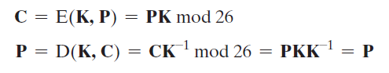
Memakai perkalian matriks. Key = matriks persegi K (mis. 2×2). Plaintext dipecah per blok sebesar ukuran matriks, tiap blok ditulis sebagai vektor baris. Bayangkan resep pengaduk: beberapa huruf dicampur sekaligus menurut angka di matriks.
Dekripsi: P = C K⁻¹ mod 26
Enkripsi: plaintext → ciphertext
Blok 1: (7, 4)·K = (7×3 + 4×2, 7×3 + 4×5) = (29, 41) mod 26 = (3, 15) = DP.
Blok 2: (11, 15)·K = (11×3 + 15×2, 11×3 + 15×5) = (63, 108) mod 26 = (11, 4) = LE.
Ciphertext: DPLE.
Dekripsi: cari K⁻¹ dulu
- Determinan: det = (3×5) − (3×2) = 9.
- Invers determinan mod 26: cari x sehingga 9x mod 26 = 1. Di sini x = 3 (9×3 = 27 → 1).
- Adjugate 2×2: tukar dua angka diagonal utama, beri tanda minus pada dua angka diagonal lain: [[5, −3], [−2, 3]].
- Kalikan x (3) dengan adjugate lalu mod 26: [[15, −9], [−6, 9]] → K⁻¹ = [[15, 17], [20, 9]].
- Dekripsi: C·K⁻¹. DP = (3, 15): (3×15 + 15×20, 3×17 + 15×9) = (345, 186) mod 26 = (7, 4) = HE. Blok LE dengan cara sama → LP. Hasil: HELP.
Syarat key dan tabel invers
| det | 1 | 3 | 5 | 7 | 9 | 11 | 15 | 17 | 19 | 21 | 23 | 25 |
|---|---|---|---|---|---|---|---|---|---|---|---|---|
| invers mod 26 | 1 | 9 | 21 | 15 | 3 | 19 | 7 | 23 | 11 | 5 | 17 | 25 |
Tabel ini hanya pelengkap hitungan (cek: 9 × 3 = 27 ≡ 1). Di ujian bisa dicari dengan mencoba x = 1, 3, 5, … sampai 9x mod 26 = 1.
Latihan hitung (tambahan, tidak dari slide)
1) Enkripsi MATH dengan K = [[3,2],[5,7]] (rumus C = PK).
Lihat jawaban
MA = (12, 0): (12×3 + 0×5, 12×2 + 0×7) = (36, 24) mod 26 = (10, 24) = KY.TH = (19, 7): (19×3 + 7×5, 19×2 + 7×7) = (92, 87) mod 26 = (14, 9) = OJ.
Hasil: KYOJ.
2) Cari K⁻¹ untuk K = [[3,2],[5,7]], lalu dekripsi KYOJ.
Lihat jawaban
det = 3×7 − 2×5 = 11. Invers 11 mod 26 = 19 (11×19 = 209 = 8×26 + 1). Adjugate = [[7, −2], [−5, 3]]. Kalikan 19: [[133, −38], [−95, 57]] mod 26 = [[3, 14], [9, 5]].KY = (10, 24): (10×3 + 24×9, 10×14 + 24×5) = (246, 260) mod 26 = (12, 0) = MA. OJ → TH. Hasil: MATH.
3) Apakah K = [[2,3],[4,5]] bisa jadi key Hill?
Lihat jawaban
det = 2×5 − 3×4 = −2 ≡ 24 (mod 26). gcd(24, 26) = 2, bukan 1, jadi tidak bisa (tidak ada invers, ciphertext tidak bisa didekripsi).G. Vigenère Cipher (polyalphabetic)
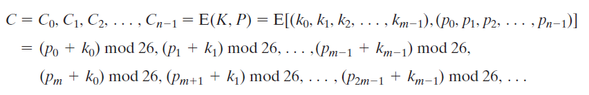
Polyalphabetic = memakai beberapa aturan substitusi bergantian. Vigenère adalah yang paling terkenal: 26 Caesar cipher dengan geser 0 sampai 25. Tiap huruf key menentukan geser Caesar untuk huruf plaintext yang sejajar. Key diulang sampai sepanjang plaintext.
Dekripsi: p = (C − k) mod 26
(k = huruf key yang sejajar, diulang terus)
Contoh dari slide
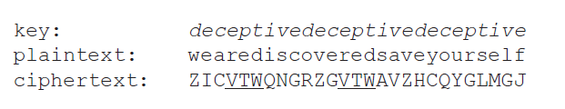
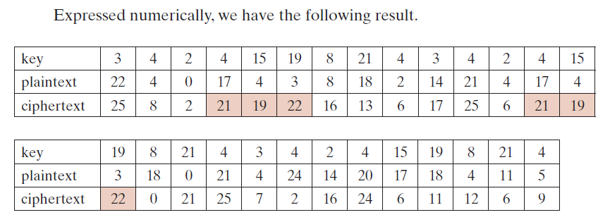
Cek huruf pertama: key d = 3, plaintext w = 22 → 22 + 3 = 25 = Z. Huruf kedua: e = 4, e = 4 → 8 = I. Cocok dengan awal ciphertext ZI….
Enkripsi: plaintext → ciphertext
A(0) + L(11) = 11 = L
T(19) + E(4) = 23 = X
T(19) + M(12) = 31 → 31 − 26 = 5 = F
A(0) + O(14) = 14 = O
C(2) + N(13) = 15 = P
K(10) + L(11) = 21 = V … lanjutkan.
Hasil: LXFOPVEFRNHR.
Dekripsi: ciphertext → plaintext
Latihan hitung (tambahan, tidak dari slide)
1) Enkripsi HELLOWORLD dengan key KEY.
Lihat jawaban
Key diulang: KEYKEYKEYK. H(7)+K(10)=17=R; E(4)+E(4)=8=I; L(11)+Y(24)=35→9=J; L+K=21=V; O+E=18=S; W+Y=46→20=U; O+K=24=Y; R+E=21=V; L+Y=35→9=J; D+K=13=N. Hasil: RIJVSUYVJN.2) Enkripsi DATASECURITY dengan key BAKER.
Lihat jawaban
Key diulang: BAKERBAKERBA. D+B=3+1=4=E; A+A=0=A; T+K=19+10=29→3=D; A+E=4=E; S+R=18+17=35→9=J; E+B=5=F; C+A=2=C; U+K=30→4=E; R+E=21=V; I+R=8+17=25=Z; T+B=20=U; Y+A=24=Y. Hasil: EADEJFCEVZUY.3) Dekripsi OMTAQVCBCVSE dengan key CIPHER.
Lihat jawaban
Key diulang: CIPHERCIPHER. O(14)−C(2)=12=M; M(12)−I(8)=4=E; T(19)−P(15)=4=E; A(0)−H(7)=−7→19=T; Q(16)−E(4)=12=M; V(21)−R(17)=4=E; … Hasil: MEETMEATNOON.H. Transposisi: Rail Fence
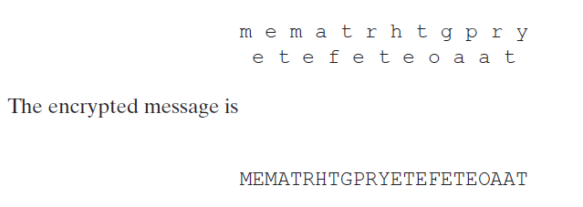
Huruf tidak diganti, hanya dipindah. Tulis plaintext zig-zag diagonal pada beberapa baris ("rail" = rel pagar, jumlahnya disebut depth), lalu baca baris demi baris. Bayangkan menjahit zig-zag naik-turun, lalu menarik benangnya lurus.
Enkripsi: plaintext → ciphertext
Baris 1:
M E M A T R H T G P R YBaris 2:
E T E F E T E O A A TGabung baris 1 lalu baris 2: MEMATRHTGPRYETEFETEOAAT.
Baris 1:
H O L (huruf ke-1, 5, 9)Baris 2:
E L W R D (ke-2, 4, 6, 8, 10)Baris 3:
L O (ke-3, 7)Hasil: HOL ELWRD LO = HOLELWRDLO.
Dekripsi: ciphertext → plaintext
- Hitung dulu berapa huruf di tiap baris dengan mengikuti pola zig-zag untuk panjang pesan itu. Pesan 10 huruf depth 3: baris 1 = 3, baris 2 = 5, baris 3 = 2.
- Potong ciphertext sesuai jumlah itu:
HOL|ELWRD|LO. - Baca zig-zag: ambil dari baris 1, 2, 3, 2, 1, 2, 3, 2, 1, 2 → H E L L O W O R L D = HELLOWORLD.
Latihan hitung (tambahan, tidak dari slide)
1) Enkripsi ATTACKATDAWN dengan depth 3.
Lihat jawaban
Baris 1: ACD (huruf ke-1, 5, 9). Baris 2: TAKTAN. Baris 3: TAW (ke-3, 7, 11). Hasil: ACDTAKTANTAW.2) Enkripsi DEFENDTHEEASTWALL dengan depth 3.
Lihat jawaban
Baris 1: DNETL · Baris 2: EEDHESWL · Baris 3: FTAA. Hasil: DNETLEEDHESWLFTAA.3) Dekripsi WAEICVRDERDSOEE dengan depth 2.
Lihat jawaban
Panjang 15: baris 1 = 8 huruf, baris 2 = 7 huruf. Potong: WAEICVRD | ERDSOEE. Ambil selang-seling: W E A R E D I S C O V E R E D → WEAREDISCOVERED.I. Transposisi Kolom (Row Transposition)
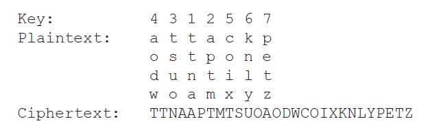
Lebih sulit dipecahkan daripada Rail Fence. Pesan ditulis per baris dalam kotak selebar panjang key, lalu dibaca per kolom mengikuti urutan angka key (kolom bernomor 1 dulu, lalu 2, dst.). Urutan kolom itulah key-nya. Bayangkan menyusun kartu per baris, lalu mengambilnya per kolom menurut nomor urut.
Enkripsi: plaintext → ciphertext
4 3 1 2 5 6 7a t t a c k po s t p o n ed u n t i l tw o a m x y zBaca kolom bernomor 1 (t t n a), lalu 2 (a p t m), 3 (t s u o), 4 (a o d w), 5 (c o i x), 6 (k n l y), 7 (p e t z).
Hasil: TTNAAPTMTSUOAODWCOIXKNLYPETZ.
Dekripsi: ciphertext → plaintext
2. Potong ciphertext per 4 huruf:
TTNA | APTM | TSUO | AODW | COIX | KNLY | PETZ.3. Potongan ke-1 masuk kolom bernomor 1 (kolom ke-3 dari kiri), potongan ke-2 masuk kolom bernomor 2 (kolom ke-4), dan seterusnya.
4. Baca per baris: ATTACKP, OSTPONE, DUNTILT, WOAMXYZ → attack postponed until two am xyz.
Latihan hitung (tambahan, tidak dari slide)
1) Enkripsi WEAREDISCOVEREDFLEEATONCE dengan key 3421567.
Lihat jawaban
Kotak 7 kolom (key di atasnya: 3 4 2 1 5 6 7):W E A R E D IS C O V E R ED F L E E A TO N C E (baris terakhir hanya 4 huruf)Baca kolom bernomor 1 (kolom ke-4): R V E E. Nomor 2 (kolom ke-3): A O L C. Nomor 3 (kolom ke-1): W S D O. Nomor 4 (kolom ke-2): E C F N. Nomor 5 (kolom ke-5): E E E. Nomor 6 (kolom ke-6): D R A. Nomor 7 (kolom ke-7): I E T.
Hasil: RVEEAOLCWSDOECFNEEEDRAIET.
2) Dekripsi EEOEAOMMNTTN dengan key 3124.
Lihat jawaban
12 huruf ÷ 4 kolom = 3 baris. Potong per 3:EEO | EAO | MMN | TTN. Potongan 1 → kolom bernomor 1 (kolom ke-2), potongan 2 → kolom bernomor 2 (kolom ke-3), potongan 3 → kolom bernomor 3 (kolom ke-1), potongan 4 → kolom bernomor 4 (kolom ke-4). Baris: MEET / MEAT / NOON → MEETMEATNOON.J. Ringkasan 8 cipher
| Cipher | Jenis | Key | Diproses | Kelemahan / catatan |
|---|---|---|---|---|
| Caesar | substitusi | satu angka k | 1 huruf | hanya 25 key → brute force |
| Monoalphabetic | substitusi | permutasi 26 huruf (26! key) | 1 huruf | pola frekuensi huruf terbawa → analisis frekuensi |
| Playfair | substitusi | kata kunci → matriks 5×5 | 2 huruf (digram) | lebih tahan frekuensi huruf tunggal; I = J |
| Hill | substitusi | matriks persegi K | blok n huruf | det K harus koprima dengan 26 |
| Vigenère | substitusi (polyalphabetic) | kata kunci, diulang | 1 huruf, geser berganti | key pendek masih bisa dipecahkan |
| Rail Fence | transposisi | depth (jumlah rel) | seluruh pesan | sangat mudah dipecahkan (kata slide: trivial) |
| Kolom | transposisi | urutan kolom | seluruh pesan | lebih sulit dari Rail Fence |
Tes diri (tutup jawaban dulu, coba jawab sendiri)
1) Sebutkan 5 komponen model enkripsi simetris.
Lihat jawaban
Plaintext, encryption algorithm, secret key, ciphertext, decryption algorithm.2) Apa beda substitusi dan transposisi?
Lihat jawaban
Substitusi mengganti huruf dengan huruf lain. Transposisi hanya memindah posisi huruf (permutasi), hurufnya tetap.3) Tuliskan rumus enkripsi dan dekripsi Caesar.
Lihat jawaban
C = (p + k) mod 26 dan p = (C − k) mod 26.4) Berapa banyak key Caesar yang mungkin, dan bagaimana memecahkannya tanpa key?
Lihat jawaban
25 key. Brute force: coba semua sampai ada kalimat yang bermakna.5) Berapa banyak key monoalphabetic, dan mengapa tetap bisa dipecahkan?
Lihat jawaban
26! atau lebih dari 4 × 10²⁶ key. Tetap bisa dipecahkan karena pola frekuensi huruf bahasa asli terbawa ke ciphertext (analisis frekuensi, digram, trigram).6) Apa digram dan trigram yang paling sering di bahasa Inggris? Apa artinya ZWP di slide?
Lihat jawaban
Digram: th. Trigram: the. ZWP di ciphertext slide = "the", yaitu Z = t, W = h, P = e.7) Sebutkan 3 aturan enkripsi Playfair dan cara menangani huruf kembar.
Lihat jawaban
Satu baris → huruf di kanan. Satu kolom → huruf di bawah. Persegi → huruf di barisnya sendiri pada kolom pasangan. Huruf kembar dalam satu pasangan dipisah dengan filler (mis. X): balloon → BA LX LO ON.8) Tuliskan rumus enkripsi dan dekripsi Hill. Apa syarat key-nya?
Lihat jawaban
C = PK mod 26 dan P = CK⁻¹ mod 26. Key harus persegi dan punya invers mod 26, yaitu gcd(det K, 26) = 1.9) Apa itu polyalphabetic cipher? Mengapa Vigenère termasuk di dalamnya?
Lihat jawaban
Polyalphabetic = memakai beberapa aturan substitusi monoalphabetic yang berbeda sepanjang pesan, dan key menentukan aturan mana yang dipakai. Vigenère memakai 26 Caesar (geser 0–25), dipilih oleh huruf key.10) Pada Vigenère, key diulang jika lebih pendek dari plaintext. Tuliskan rumus enkripsinya.
Lihat jawaban
Ci = (pi + ki) mod 26, dengan ki huruf key yang sejajar (key diulang).11) Bagaimana cara kerja Rail Fence dan Transposisi Kolom?
Lihat jawaban
Rail Fence: tulis plaintext zig-zag pada beberapa baris, lalu baca baris demi baris. Kolom: tulis per baris dalam kotak selebar key, lalu baca per kolom mengikuti urutan angka key.12) Mengapa Playfair lebih sulit dipecahkan dengan analisis frekuensi daripada monoalphabetic?